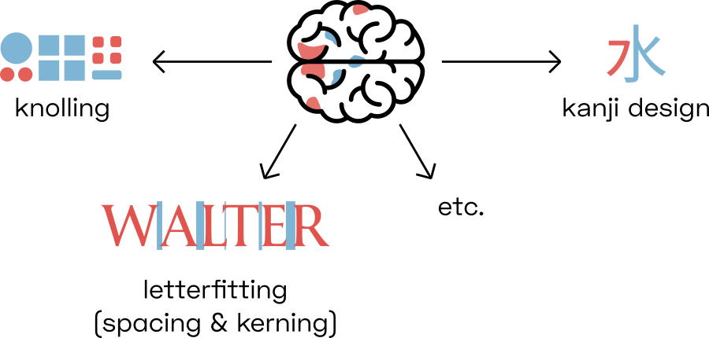

YinYangFit ☯
A letterfitting model inspired by biology
Overview
There are three parts to this project:
- An explanation of the model, updated regularly as I refine it. (You’re reading this at the moment.)
- A Jupyter notebook hosted on Google Colab, which I use to experiment with different variations on the model. I will make the notebook public soon. Note that I’m using it as a live-coding environment, so don’t expect clean code.
- A letterfitting tool designed for end users. This will probably take the form of a Python script, perhaps with a simple browser interface, which takes in any font file and adds spacing and kerning values according to the model. This doesn’t exist yet.
Acknowledgements
A big thank-you to Google for their generous funding of this research project.
Project plan
- Early October 2019: publish basic concept
- October-November 2019: publish Colab notebook
- Sometime, hopefully in 2019: converge on a satisfactory model
- Late 2019 / early 2020: build and publish letterfitting tool
Contents
- A good fit: what does that mean?
- Exisiting letterfitting tools
- What can vision research teach us about letterfitting?
- Models of the visual cortex
- Building a multi-scale letter pair analyzer (in progress)
- Results (check back soon!)
- Parameter tuning (check back soon!)
- YinYangFit, the tool (check back soon!)
A good fit: what does that mean?
Spacing and kerning type (hence: “letterfitting”) is painstaking work. Heuristics exist, and some of them have been implemented in software, but letter shapes are so varied across typefaces that extensive manual adjustments are often still required. I provide a review of some of the current heuristics below.
Looking for new approaches can feel like groping in the dark. Often, heuristics designed to accommodate one font style perform poorly with other styles.
Let’s take a step back and ask: what does it mean for letters to be well-fitted? And while we’re at it: what does it mean for objects to be well-knolled? And what does it mean for a kanji to be well-balanced?

Cognitive scientists have built up a large repertoire of ideas about how vision works in the brain, and I believe that those ideas can guide us towards a clearer understanding of what it means for shapes to be “too close” or “too far” – and towards better letterfitting tools, of course.
Existing letterfitting tools
Most existing approaches operate either on the distance between stems, or on the area of the gap between them. Some are hybrids, more complex, or unpublished; finally, there has been some experimental work using neural nets:

Fixed-distance methods: A family of approaches that insert pre-defined distances between letter pairs. In their simplest incarnation, these heuristics are equivalent to simply adding sidebearings to every letter, without any kerns. Kernagic, inspired by Frank Blokland’s research, uses heuristics to identify stems or stem-equivalents (such as the round sides of an o) in every letter shape, and then aligns them. This works reasonably well with very regular type (think blackletter), but manual adjustments are usually required. Less well known is Barry Schwartz’ anchor point implementation of what amounts to basically the same idea. Adrian Frutiger, Walter Tracy and Miguel Sousa have devised similar systems, described in Fernando Mello’s MATD thesis. The legendary Hz-Program is also included in this category, as its patent application reveals that letter pair distances were simply stored in a hardcoded table.
Gap area quadrature: A family of algorithms that attempt to quantify and equalize the perceived area of the inter-letter gap. The crux, of course, lies in deciding where the gap ends. HT Letterspacer, the crudest one of these tools, considers everything between baseline and x-height (modulo some minor refinements). Simon Cozens’ CounterSpace uses blurs and convex hulls to more effectively exclude regions that arguably don’t belong to the gap (such as the counter of c). My own Electric Bubble model measures Euclidean instead of horizontal distances, but imposes geometric constraints that produce similar results to CounterSpace. CounterSpace currently wins in terms of performance-complexity ratio but it, too, struggles to fit certain letter pairs.
Other shape-based methods: These include more exotic approaches, such as stonecarver David Kindersley’s “wedge method” from the 1960s, which operated on letter area moments of inertia (and didn’t really work), and iKern, which produces great results but, just like Adobe’s Optical Kerning feature, remains unpublished. Last but not least, the TypeFacet Autokern tool identifies parts of letter outlines that jut out horizontally, and adds kerning to compensate, based on a few parameters.
Neural nets: Yes, we can train convolutional nets to recognize images of well-fitted and poorly-fitted type. Simon Cozens has built several incarnations of his kerncritic model (formerly AtoKern), and the latest versions perform surprisingly well on many (if not all) pairs. While neural nets are fascinating, they tend to be black boxes: we can only make guesses at how they work, and we cannot tune their behaviour to suit our taste. The same is true not just for convolutional nets, but for statistical function approximators in general; I will not discuss them further in this post.
Honorable mention: Bubble Kerning is a proposal that type designers draw a bubble around every letter, such that software can automatically find pair distances by simply abutting the bubbles. While this isn’t technically a letterfitting heuristic at all, it’s still worth mentioning as a neat idea that could perhaps save designers some time. Toshi Omagari has built a Glyphs plugin.
What can vision research teach us about letterfitting?
Flippantly speaking, much of vision research is about designing optical illusions and testing whether or not we fall for them. And whenever we do, we can propose neural architectures that might explain the effect (and then run expensive fMRI and in-vivo animal studies to discredit competing theories).
Decades of such experiments have produced a wealth of literature, which can be summarized as follows: in order to maximize object detection performance, our brain first enhances incoming imagery using what amounts to a set of Photoshop filters: contrast normalization, sharpening, edge detection, and so forth. These filters are implemented as amplifying and inhibiting connections between neurons (and particular artificial patterns can trick these networks into funny, oscillating behaviour – optical illusions!).
Crucially, the first set of neurons processes the image by detecting lines and edges at multiple scales: some filters pick out fine details, others larger structures. Any objects, including letters, are recognized based on the presence of their features across multiple scales.
Letters are very simple structures, so in order to explain letterfitting (or kanji design), the following theory may be enough to produce good results:
Fitting letters too tightly attenuates some of their features at medium and larger scales (compared to standalone letters), slowing down letter recognition
Fitting letters too loosely creates saliency in the gap between the letters at larger scales, lowering the signal-to-noise ratio and slowing down word recognition
To test this hypothesis, we need a reasonably accurate software model of the early stages of our brain’s visual processing pipeline.
Models of the visual cortex
 Illustration of some receptive fields of these so-called “simple cells” in the primary visual cortex (V1).As you are reading these words, image data from your retina flows up your optical nerve into your brain, where it gets routed to the visual cortex at the back of your head. Each neuron there combines the input from a few neighbouring photoreceptors in your retina. The specific combinations are chosen to allow each neuron to respond to a small, meaningful feature – for instance, a small dark-light edge angled at 45 degrees. Generally, neighbouring neurons correspond to neighbouring locations on the retina, but their receptive fields come in different sizes, orientations, and phases (dark-light sequences).
Illustration of some receptive fields of these so-called “simple cells” in the primary visual cortex (V1).As you are reading these words, image data from your retina flows up your optical nerve into your brain, where it gets routed to the visual cortex at the back of your head. Each neuron there combines the input from a few neighbouring photoreceptors in your retina. The specific combinations are chosen to allow each neuron to respond to a small, meaningful feature – for instance, a small dark-light edge angled at 45 degrees. Generally, neighbouring neurons correspond to neighbouring locations on the retina, but their receptive fields come in different sizes, orientations, and phases (dark-light sequences).
To model the output from simple cells sharing a particular size, orientation, and phase – let’s call that a channel – we can simply convolve the input image with a kernel corresponding to the receptive field and rectify the result. Popular mathematical functions used to generate such simulated kernels include Gabor patches, differences/derivatives/Laplacians of Gaussians, and others – they all look like the sample receptive fields above.
Cognitive scientists are confident that the above is largely correct. What happens next, however, is less certain. These simple cells don’t just pass their outputs up to higher-level brain areas; they also interact with one another, electrochemically stimulating and/or muting nearby cells in proportion to their own activity. What’s more, neurons from higher-level areas can also “reach down” and modulate perception as it is still taking shape. This really means that our learned expectations directly shape our experience, so it’s not unlikely that your familiarity with the Latin script and English orthography subtly affects your perception of a font’s metrics. Modelling that is hopelessly out of reach, of course.The waves of electricity that flash through these inscrutably connected networks are, in aggregate, responsible for the experimental findings: local contrast normalization, contour pop-out, and so forth. These don’t necessarily happen in sequence, but rather in parallel, until the electrical oscillations settle into a stable pattern for some tens of milliseconds before new information comes in.
Of course, that biological complexity hasn’t kept generations of clever PhD students from inventing simple(r) formulas that can reproduce the experimental results without simulating the temporal dynamics of the whole network. Such a model is what we will use to predict how the distance between a pair of letters affects their appearance relative to how they appear individually.
Although I do not provide a literature review here (perhaps in a future version?), I strongly encourage interested readers to dig into the huge variety of models people have come up with. A great place to start is this 2011 review of the last 25 years of research by Norma Graham, followed by Michael Morgan’s review of image features.
Building a multi-scale letter pair analyzer
One of the models that has found some recent popularity is the second-order contrast (SOC) model by Kendrick Kay et al. It’s relatively simple and ticks many of the boxes that other filter-rectify-filter models don’t, and it even appears to predict fMRI responses quite well (bonus points!).
However, it was tested only at a single filter scale, whereas our hypothesis incorporates the agreement between feature detectors across multiple scales. We will therefore run the SOC model at multiple scales.
(To be continued …)
Results
(Come back soon!)
Parameter tuning
(Come back soon!)
YinYangFit, the tool
(Come back soon!)